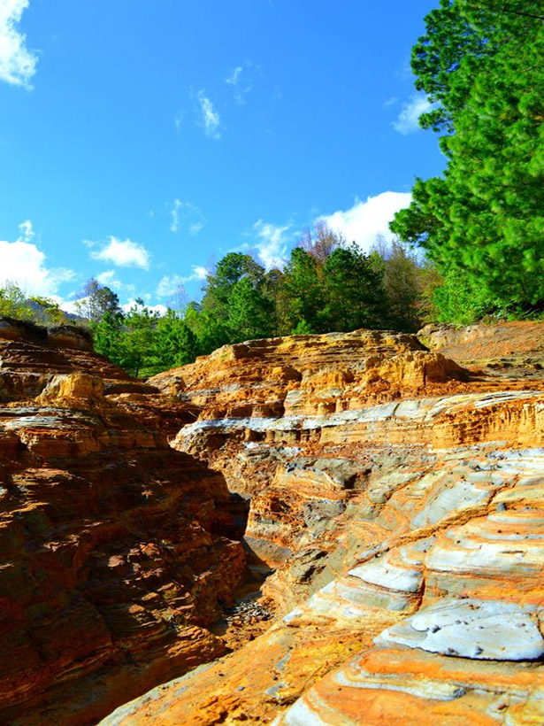

En Valle de Ángeles, Francisco Morazán, el fascinante recorrido comienza por un descenso en las antiguas minas de la región, una serie de colinas de arena roja y suave que hacen recordar los tiempos de la colonia española con la extracción de plata de las regiones de Tegucigalpa.
Terminando el descenso, le sigue una ruta silvestre por un bosque, el cual conduce final mente a una cascada de agua cristalina que baja desde las montañas y alimentan la flora y fauna que se puede apreciar durante el viaje de unos 6. 19 kilómetros. La ruta está llena de verdosas montañas, habitadas por numerosos árboles y vertientes de la cascada, por lo que el clima se mantiene fresco a lo largo del viaje.
Se puede escuchar desde lejos la fuerte caída del agua, en donde los valientes no se quedan solo al mirar, sino que tratan de treparla con equipo o sin él. Para terminar la ruta, una de las opciones es regresar por las minas, en donde encontrará un camino de tierra que lleva de regreso al principio el ruta, la cual se ubica al poblado de Valle de Ángeles para luego descansar de este viaje lleno de ascensos y bajadas, en este hermoso lugar.
El Parque Nacional La Tigra cuenta con una extensión de 24,040 hectáreas de bosque dividida en zona de amortiguamiento y zona núcleo, que forma parte de la cadena montañosa central de Honduras. La Tigra tiene una gran variedad de flora y fauna, entre la vegetación se puede mencionar especies de árboles como el Pino de Ocote, Robles, Encinos, Liquidámbar, Aguacatillos entre otros.
En el Parque Nacional La Tigra usted podrá vivir una experiencia inolvidable. Si usted es un apasionado de la naturaleza o se enamoró del lugar, usted puede un voluntario en el programa que organiza la Fundación Amigos de La Tigra, Amitigra. El objetivo es ayudar a preserva tan invaluable riqueza natural.
En La Tigra existen ocho senderos por recorrer: Sendero Granadillas, Jucuara, Bosques Nublados, La Esperanza, Sendero Principal, La Cascada, La Mina y las Golondrinas. Cada uno posee sus características y grados de dificultad, por lo que se recomienda realizar el recorrido con los guías autorizados.


Resguardada por verdosas montañas, al fondo y desde su mesa, podrá ver el Lago de Yojoa. ¡Una visión! Panacam Lodge. Este hotel y restaurante, ubicado dentro del Parque Nacional Cerro Azul Meámbar, ha ganado mucha popularidad por la calidad de su rica comida. Cuenta con 22 habitaciones a un precio alrededor de 57 dólares la habitación por noche.
No se preocupe por llevar comida a este parque nacional, ya que el restaurante abre sus puertas desde la hora del desayuno y cierra hasta después de la hora de la cena. ¡Abre todos los días del año!
Se aceptan tarjetas de crédito/débito, cuentan con internet inalámbrico.
Horario de atención: Todos los días de 6:30 a.m a 7:00 p.m
Sin Rumbo Mountain Getaway es un lugar donde podrá que desconectarse de todo y disfrutar de un momento de paz y serenidad rodeado de espectaculares escenarios naturales en un ambiente de calma que le ayudará a conectarse con su interior y por supuesto con la naturaleza.
Ubicado a tan solo ocho kilómetros del centro de Valle de Ángeles entre las aldeas de Buena Vista y El Guayabo, están las cabañas estilo casa de campo que cuentan camas para descansar, chimeneas con leña, hamacas para relajarse y un balcón privado donde podrá apreciar una majestuosa vista del valle que le dejará sin palabras.
En este paradisíaco lugar se pueden presenciar hermosos amaneceres, ya que su mirador le permitirá apreciar un nublado valle donde además podrá saborear una aromática taza de café que encaja perfectamente con el clima fresco de este sitio.